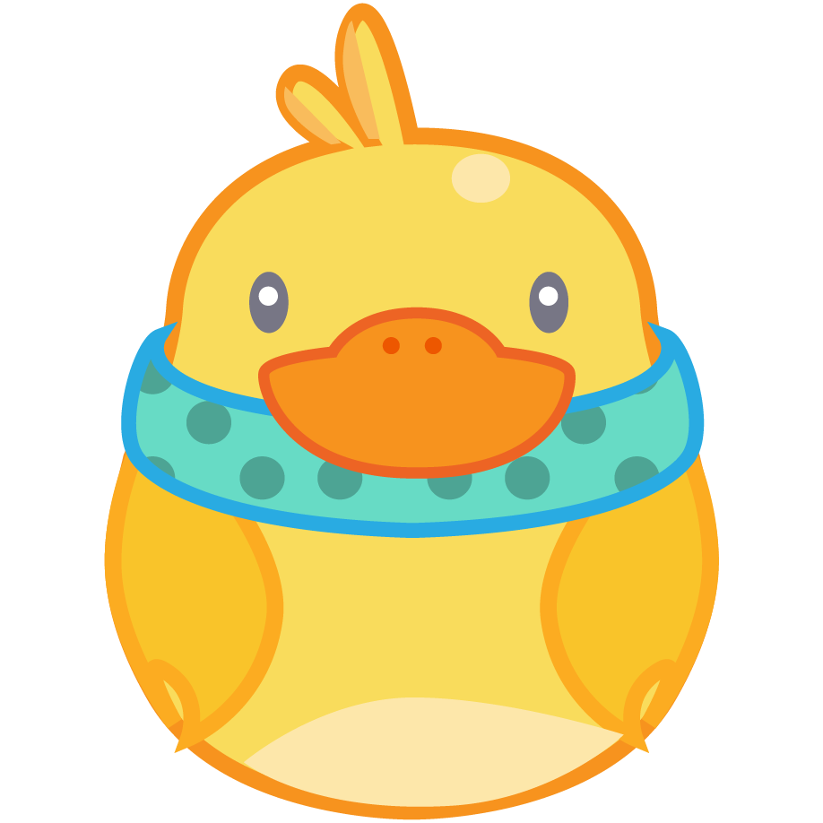

1:31 AM
Utonium Is Good
Run Selen
1:31 AM
呱呱箱子
中文中文中文 English English. YAYAYA
1:31 AM
Niki Nui
freaksss
1:31 AM
not knot
sniper
1:31 AM
VeryUnofficialPerson
damn dude
1:31 AM
クラフトヴァーダント
stream sniper?
1:31 AM
Dark Night【闇夜】
1:31 AM
nutella
oh no sadge
1:31 AM
Ziber
gibby and bocek?
1:31 AM
lecheflam
RUN RUN RUN
1:31 AM
ChinchillaBONK
Better run. Stream snipers
1:31 AM
HL_go
at least they're committed
1:31 AM
Hao
streasm snipe?
1:31 AM
ZYX
Lol the griefing
1:31 AM
Norikei
uncool
1:31 AM
Nero
stream snipers?
1:31 AM
Abe
Gotta W fast
1:31 AM
Soulja Tokino
End of season griefers
1:31 AM
Slacker
it so annoyning
1:31 AM
henny_lazulite
BOCEK GIB
1:31 AM
xelasneko
still chasing?
1:31 AM
Epuration
1:31 AM
lecheflam
oh is that another team...
1:31 AM
Slacker
flip off
1:31 AM
KenyaFitTees
Are they stream snipers?
1:31 AM
-w- Feather
they keep chasing you
1:31 AM
Slacker
so annoying
1:31 AM
ReiMikage
stll chasing wtf
1:31 AM
ZYX
They are chasing inside the zone???
1:31 AM
bruh moment
And they still hard chase through the zone?!?
1:31 AM
henny_lazulite
MUST. GO. FASTER!
1:31 AM
Compulsor
stream snipers or griefers… or both
1:31 AM
Eras Ker
get out
1:31 AM
RobinBanks
stream snipers
1:31 AM
Strobbery
might be snipers
1:31 AM
SliceSabre
1:31 AM
Seven Pixels
KEEP RUNNING
1:31 AM
Wrathinuss
smells like stream snipe
1:31 AM
Bwaka 67
Try Harding
1:31 AM
Shujinko
the heady
1:31 AM
Admerelech
meds wtaith
1:31 AM
Alex Mirage
They are really angry
1:31 AM
Assassin Eclipse
See, rotations and positioning don't matter in ranked. Just unga bunga take every fight, hunt every enemy
1:31 AM
Gloomè Fusion
They’re so desperate
1:31 AM
ChinchillaBONK
if he is boceking means he is decent and WANTS people to make when they die to a bocek
1:31 AM
bruh moment
These guys are definitely sniper
1:31 AM
IDPG
oh no wraith
1:31 AM
Garbaj
stop separating from the team
1:31 AM
Sunny Sunny
What are they on Bruh
1:32 AM
tikkula
people hungry for those kill points.
1:32 AM
Maruniko
no its normal to thirst on ring edge
1:32 AM
SuperParaKoopa
they probably know it's you
1:32 AM
Mars
how's it going son
1:32 AM
Surr3aL
probably KP hungry
1:32 AM
CupsCups
perhaps stream sniper?
1:32 AM
Miguel Bautista
yeah they probably know its you
1:32 AM
FTH thehunter
Heat shield?
1:32 AM
Nero
has to be a combo of griefers/snipers
1:32 AM
Xel
apex for 7 hours, I hope you're fine selen
1:32 AM
「エム」Emrald Kun
YOU ARE HUNTED..
1:32 AM
CoffeeeeAddict
So bloodthirsty
1:32 AM
xelasneko
too risky?
1:32 AM
Jay P
sure it rat time LUL
1:32 AM
Raze Betatester
they are on his body
1:32 AM
Edd
And they use streamer mode lol
1:32 AM
jazzy
is selen getting stream sniped?
1:32 AM
Admerelech
hopefully no camps
1:32 AM
Raddical Goose
100 camping that box
1:32 AM
Maruniko
savagery of edge team
1:32 AM
ZYX
The grief dude
1:32 AM
Nadi
Wtf? Selen? You're still streaming??
1:32 AM
C4
maybe they just want met their oshi
1:32 AM
ReiMikage
loot the body
1:32 AM
Sehruhark
"meth stole my teeth" These names are top level
1:32 AM
Choco
that wraith went to narnia
Welcome to live chat! Remember to guard your privacy and abide by our community guidelines.
Learn more